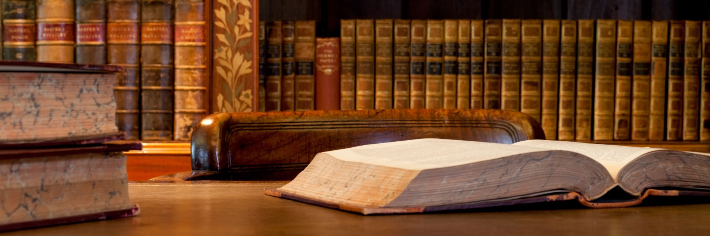
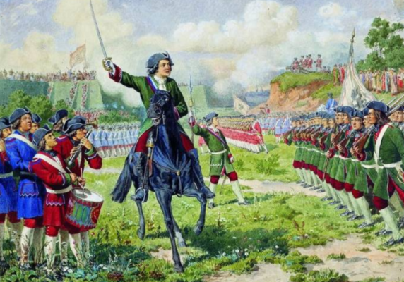
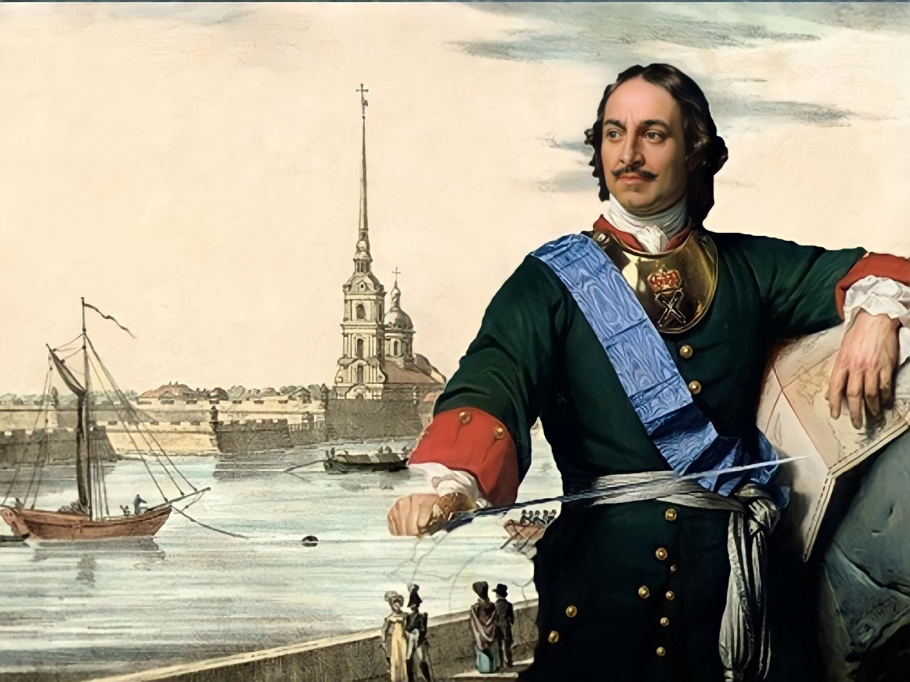
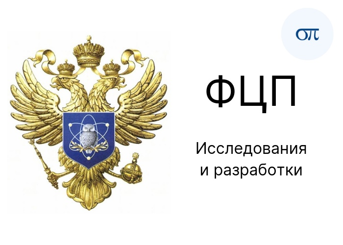
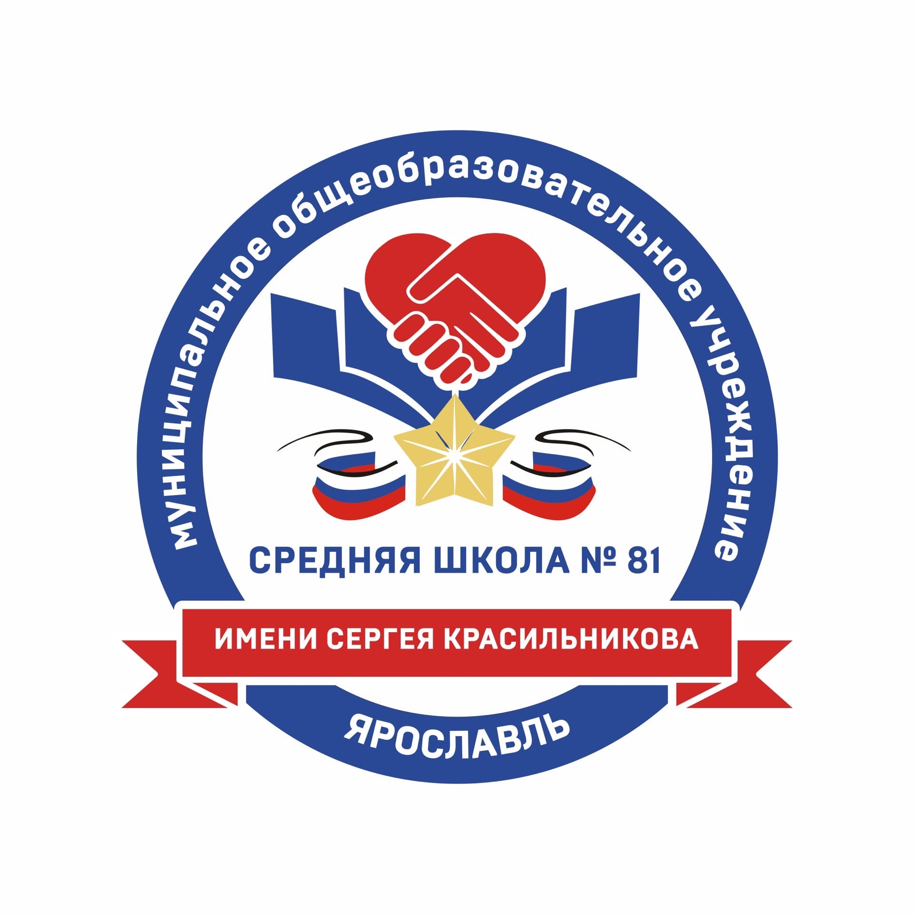
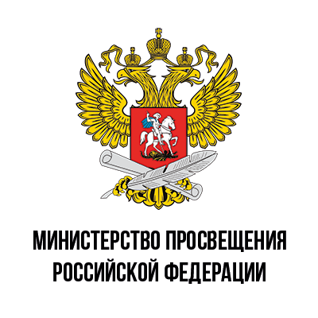

|  | ||||
| Пётр I Великий | Азовские походы | Великая Северная война со Швецией | Каспийский поход (Персидский поход, русско-персидская война) | |
Пётр I Великий (9 июня 1672 – 8 февраля 1725 гг.)ДетствоУ первого российского императора, Петра I, было трудное детство. Он остался без отца, царя Алексея Михайловича, в 4 года. Этим он отличался от предыдущих трех правителей из династии Романовых, которые получили семейное воспитание. Однако именно в детские годы, до своего 17-летия, юный Петр заинтересовался флотом и военным делом. Юность, с 1682 по 1689 год, Петр I провел в подмосковном селе Преображенском. Из своих ровесников он сформировал «потешное войско», где сам служил барабанщиком. В 1685 году оно совершило переход из села Преображенское в село Воробьево. С 1686 году у «потешного» полка появилась артиллерия и два небольших корабля, шняка и струг, на реке Яузе. В 1688 году по просьбе Петра I был отремонтирован английский бот, но река Яуза ему оказалась мелковата. Наследник престола направился на Плещеево озеро у города Переяславля-Залесского, где построил верфь и начал строительство для сообщения по пресноводным путям. В начале 1689 года он вступил в брак с Евдокией Лопухиной. В августе-сентябре 1689 года он смог отстранить Софью от власти. Формально до 1696 года он царствовал вместе с братом Иоанном. Поставив себе цель вооружить экономику лучшими западными технологиями производства, Пётр реорганизовал все отрасли народного хозяйства. Во время Великого посольства царь изучил различные стороны европейской жизни, в том числе и техническую. Он усвоил основы господствующей в то время экономической теории — меркантилизма[43]. Своё экономическое учение меркантилисты основывали на двух положениях: первое — каждый народ, чтобы не обеднеть, должен сам производить всё, что ему нужно, не обращаясь к помощи чужого труда, труда других народов; второе — каждый народ, чтобы богатеть, должен как можно больше вывозить из своей страны произведённую продукцию и как можно меньше импортировать. При Петре начинается развитие геологоразведки, благодаря чему на Урале находят месторождения металлической руды. Только на Урале было построено при Петре не менее 27 металлургических заводов; в Москве, Туле, Санкт-Петербурге основывались пороховые заводы, лесопильни, стекольные мануфактуры; в Астрахани, Самаре, Красноярске налаживалось производство поташа, серы, селитры, создавались парусные, полотняные и суконные мануфактуры[44]. Это позволило начать постепенный отказ от импорта. К концу царствования Петра I эксплуатировалось уже 233 завода, в том числе более 90 крупных мануфактур, построенных в течение его царствования. Крупнейшими были верфи (только на Санкт-Петербургской верфи работало 3,5 тысяч человек), парусные мануфактуры и горно-металлургические заводы (на 9 уральских заводах работало 25 тыс. рабочих), существовал ряд других предприятий с числом занятых от 500 до 1000 человек[45]. Для снабжения новой столицы были прорыты первые в России каналы.
|
   | |||
ВК https://vk.com/tv242831ПОЧТА:trankov.yevgeniy@bk.ru |
||||